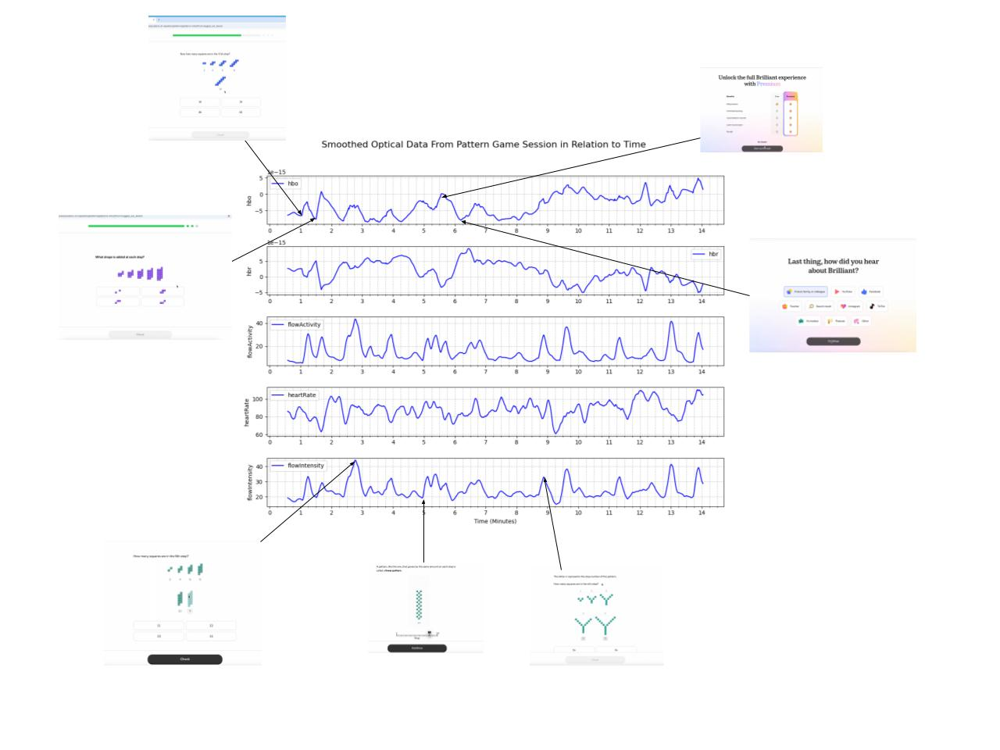

Discussion

Looking at this graph, we can infer many things. For example, when looking at the HbO levels throughout the 12 minutes, you can see several sharp peaks and dips. This represents changes in oxyhemoglobin concentration due to brain activity, which is most likely due to taking notes and processing information. Oddly, when the person first starts taking notes at 43 seconds, HbO drops almost immediately after. This is weird because, as we just stated, taking notes requires brain power, increasing brain activity as a result. If you zoom in more closely, you can clearly see that HbO drops at 48 seconds, which indicates a muscular response event. More interestingly, if you take a look at around 51 seconds, there is a sharp peak showing that the muscular response event actually caused an increase in HbO, showing that the person probably noticed something important in the reading.

- HbR mirrors HbO, showing an inverse relationship. When oxyhemoglobin increases, deoxyhemoglobin decreases, which is typical in brain activity.
- The flowActivity, heartRate, and flowIntensity data all reflect the mental engagement of the reader. For example, a spike in flowActivity can show active comprehension, while flat regions indicate passive reading.
- Since flowIntensity looks a lot like flowActivity, and it is a composite of both heartRate and flowActivity, we can assume that flowActivity dominates.
After a few days, we received another drive folder, this time having a screen recording and a CSV file of a person playing a pattern recognition game.
After taking a quick glance at this graph, we immediately noticed that it was different from the reading and note-taking session one. HbO was really jagged and trended upwards instead of being relatively steady with a few peaks and dips. This makes sense because pattern games require you to think more. The first big peak occurred around 1 minute 9 seconds, which was when the game was explaining what the person was just doing and what the overall course is about. This could suggest that the person was reflecting on the patterns they had just created. Additionally, the course summary may have caused the person to try to connect what they had just done with the overall objectives of the course.

At 5 minutes 36 seconds, when the person is forced to make a purchase decision, both HbO and flowIntensity spike. This is likely due to the fact that the person was evaluating whether or not they should make the purchase, which triggered their neurons. Additionally, that might’ve stressed them out a little, explaining the cardiovascular response.
Surprisingly, HbO reached its highest when the person was at the level selection screen, which occurs at 9 minutes 36 seconds. We think this could’ve been due to two factors we previously discussed: reflection and decision-making. The person might’ve been asking themselves whether or not they should move on or give their brain a chance to take in everything that just happened. It could’ve also been due to anticipation; the person could’ve been expecting a harder level, so they were getting mentally prepared for it. We later found out that it was a muscular response artifact.

Nonetheless, all of these responses could’ve simply occurred because the brain had to reorient itself to the change of scenery, the new page.